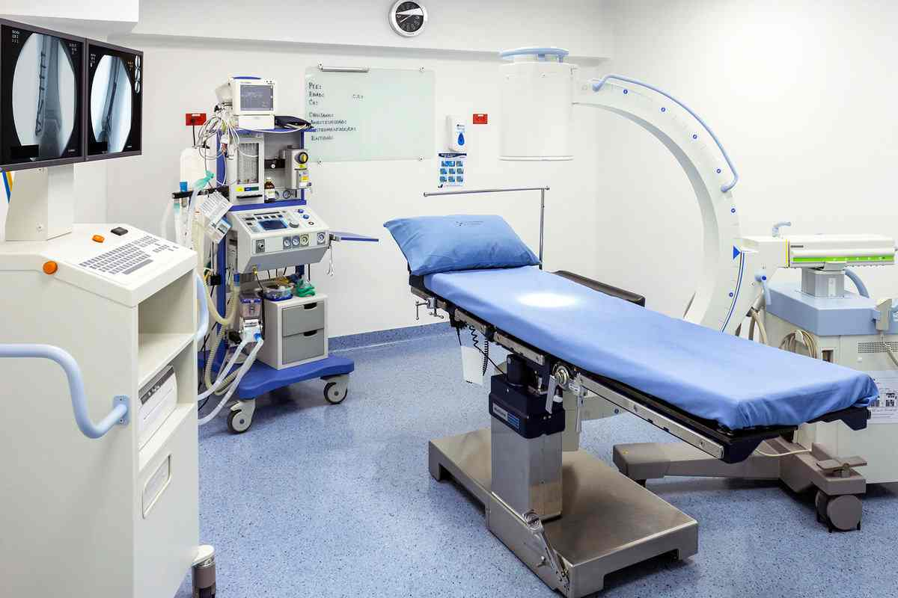

Conoce nuestro espacio


Instalaciones equipadas para tu recuperación
Consulta especializada, servicio farmacéutico y productos ortopédicos en un solo centro, en el corazón de El Poblado.
Desde la consulta con el especialista hasta la farmacia y los productos que tu recuperación necesita.
Consulta especializada para lesiones óseas, articulares y musculares, con planes de tratamiento claros.
Farmacia dentro del centro: tus medicamentos e insumos sin salir del edificio.
Férulas, inmovilizadores, sillas de ruedas y ayudas técnicas para cada etapa de tu recuperación.
Tecnología de imágenes para diagnósticos precisos y seguimiento de tu evolución.

El Centro de Ortopedia El Poblado es un referente en atención ortopédica en la ciudad: cientos de pacientes nos confían su recuperación cada mes.
"La valoración fue muy completa. Me operaron de menisco y la rehabilitación aquí fue clave para volver a caminar normal."Andrés P. · paciente post-quirúrgico de Centro de Ortopedia El Poblado
8:00 a.m. – 7:00 p.m.
9:00 a.m. – 1:00 p.m.
Solo con cita previa. Escríbenos por WhatsApp para confirmar disponibilidad.
Consultar dirección exacta al agendar
Si es tu primera vez con nosotros, puedes agendar una consulta particular directamente. Si cuentas con remisión de tu EPS, tráela para agilizar el proceso.
Sí, contamos con férulas, inmovilizadores, sillas de ruedas y otras ayudas técnicas disponibles para venta directamente en el centro.
Sí, nuestras instalaciones cuentan con entrada y espacios accesibles para pacientes con movilidad reducida.
Sí, contamos con servicio farmacéutico dentro del mismo centro para que resuelvas todo en una sola visita.
Cra. 41 #9-05
El Poblado, Medellín
(604) 520 91 20
Entrada y servicios accesibles
4.4 · 329 reseñas
Estamos en la Cra. 41 con Calle 9, zona de fácil acceso desde toda la ciudad.
Ver en Google Maps Llamar al (604) 520 91 20